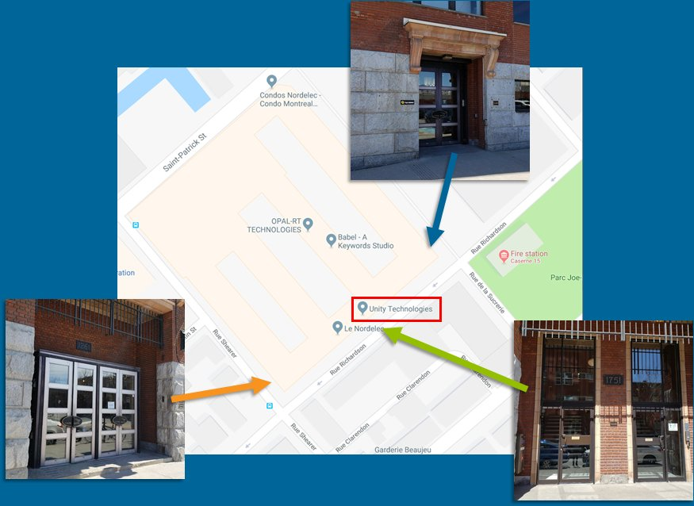

1751 rue Richardson, suite 3500,
Montreal, QC H3K 1G6
Unity Technologies' offices are located in one of Montreal's architecural landmarks: Le Nordelec.
Please enter the building from Richardson street on the south-east side of the building.
There are three (3) entrances available, as shown in the figure below.
Take the stairs or the elevator to the third (3rd) floor.
Unity Technologies' offices are housed on the east side of the building.
Banquet guests will also have the opportunity to visit the Memory Collector and Fort Ville-Marie exhibits at the Montreal Museum of Archaeology and History.
165 Place d'Youville
Montréal, QC H2Y 2B2
Transportation from Unity Technologies to the banquet venue will be arranged for conference attendees.
Hotel St-Paul, 355 rue McGill.
Alt Hotel Montreal, 120 Peel Street.
Please note that I3D conference dates will overlap with ICRA 2019. It is therefore likely there will be a reduced availability of rooms.
Attendees are responsible for their own transportation to and from Unity's Montreal office. There are several options if traveling from the downtown area: